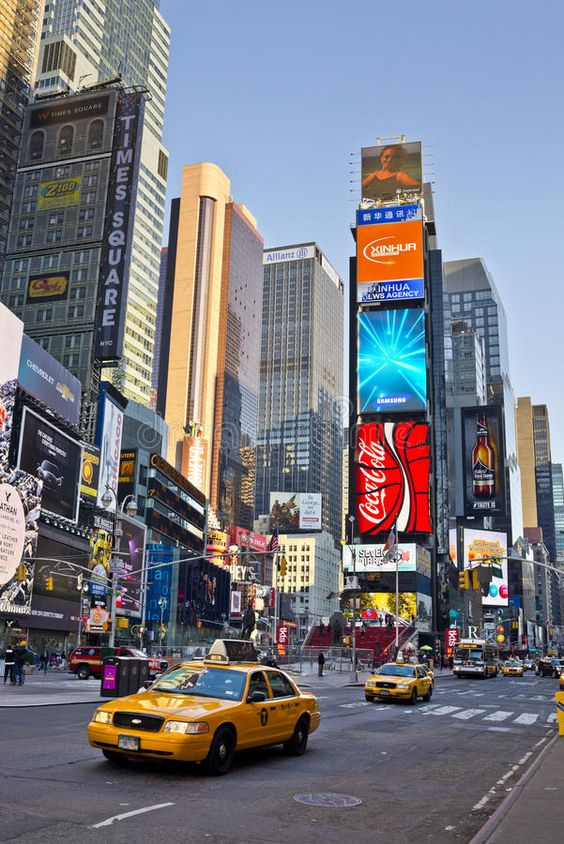

NOWY JORK
Trzeci dzień mojej podróży rozpocząłem w Nowym Jorku, mieście, które nigdy nie śpi. Po magicznych chwilach spędzonych w Paryżu, byłem gotowy na odkrywanie kolejnych tajemnic w sercu Stanów Zjednoczonych. Pierwszym przystankiem na mojej liście była Statua Wolności. Zbliżając się do tego symbolu wolności, poczułem niezwykłe emocje. Widok, który rozciągał się z jej korony, był po prostu oszałamiający.
Po wizycie u Pani Wolności, postanowiłem przemierzyć ulice Manhattanu, które już wcześniej znałem z gry Spider-Man na PS4. Czując się jak Peter Parker, przemierzałem znajome zakątki miasta, które wcześniej widziałem tylko na ekranie. Każdy zakręt, każdy zaułek przypominał mi o misjach, które wykonywałem w grze. Na chwilę mogłem poczuć się jak prawdziwy superbohater, gotowy do ratowania miasta.
Gdy już nasyciłem się widokiem nowojorskich ulic, skierowałem swoje kroki w stronę Empire State Building. Wspinając się na szczyt tego monumentalnego budynku, mogłem podziwiać panoramę miasta. Widok był niesamowity, a uczucie bycia na szczycie świata było nie do opisania.
W drodze powrotnej z Empire State Building natknąłem się na Times Square, gdzie pulsujące światła i ogromne ekrany LED wprawiły mnie w zachwyt. To miejsce tętniło życiem, a energia, którą emanuje, jest trudna do porównania z jakimkolwiek innym miejscem na świecie. Spacerując po tej kultowej przestrzeni, poczułem się jak część czegoś większego, jakby Nowy Jork przyjął mnie w swoje ramiona.
Po intensywnym dniu pełnym wrażeń, postanowiłem zjeść coś w jednej z lokalnych knajpek. Wybór padł na mały, urokliwy diner, gdzie zamówiłem klasycznego nowojorskiego burgera. Siedząc przy stoliku i obserwując przechodzących ludzi, czułem, że jestem częścią tego wielkiego, żywego miasta. Moje myśli krążyły wokół wydarzeń dnia, a smak burgera dodatkowo potęgował wrażenia.
Wieczorem zdecydowałem się na spacer po Central Parku. Nocne oświetlenie i cisza, która panowała w parku, kontrastowały z gwarą miasta, tworząc idealne miejsce na chwilę refleksji. Spacerując alejkami, poczułem, że ten dzień był wyjątkowy, pełen niespodzianek i nowych doświadczeń.
Niestety, czas płynął nieubłaganie, a ja musiałem wracać na lotnisko, aby kontynuować swoją podróż. Z mieszanką ekscytacji i lekkiego smutku opuszczałem Nowy Jork, obiecując sobie, że kiedyś wrócę, aby odkryć więcej jego tajemnic. Ale na razie czekał mnie kolejny cel - miasto wzorowane na mojej ulubionej grze GTA V - Los Angeles!
Więcej zdjęć z Nowego Jorku jest dostępne w Galerii